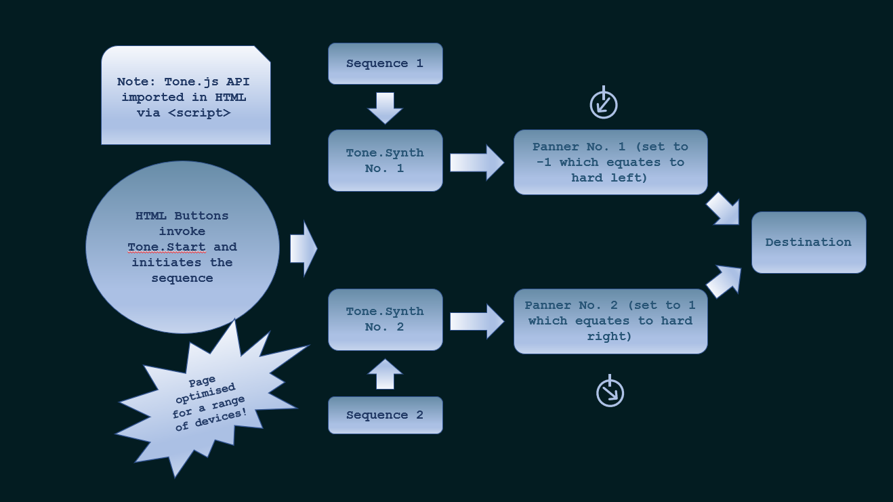

Web Audio API versions of Diana Deutsch's Audio Illusions
Developed by Daniel Rush for final project (dissertation).Studying Sound Engineering & Production at the University of Salford.
Mysterious Melody Illusion
Octave Illusion
Cambiata Illusion
Speech-to-Song Illusion
See below for an example of the Octave / Cambiata code flow chart:
